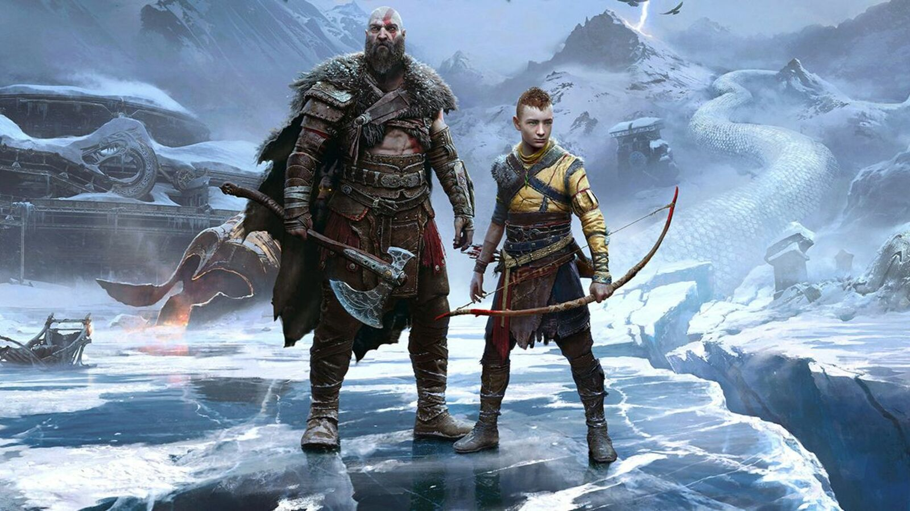
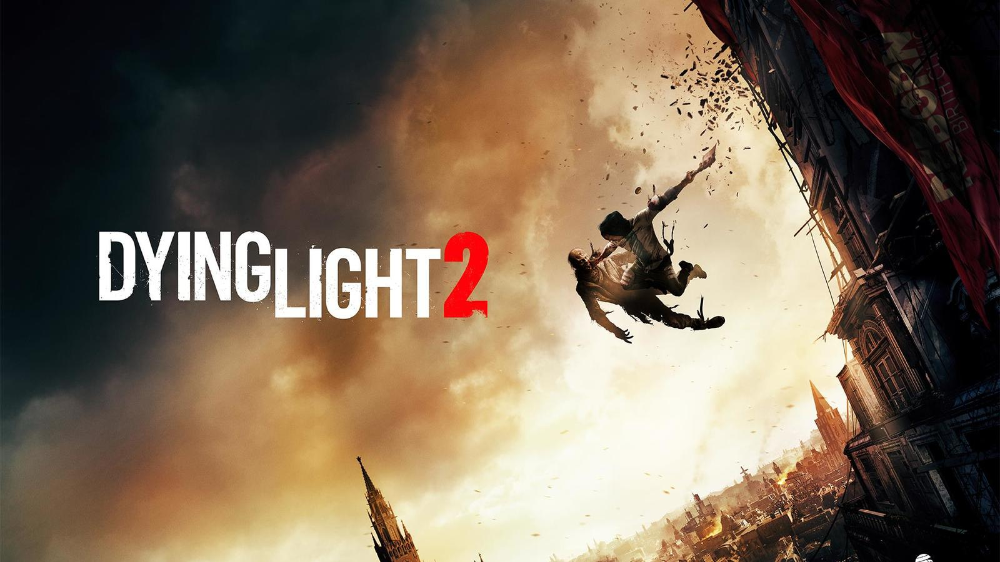
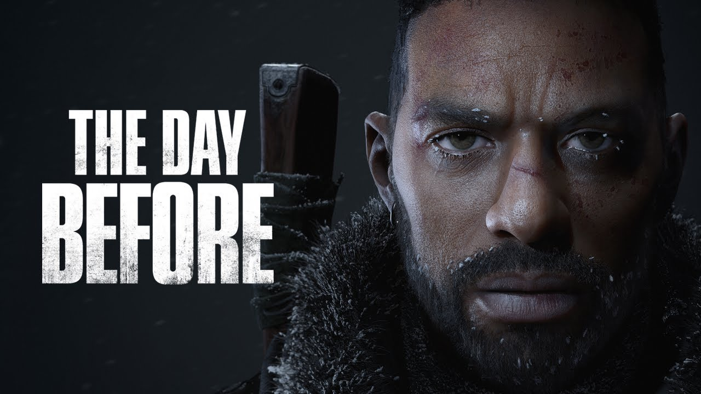
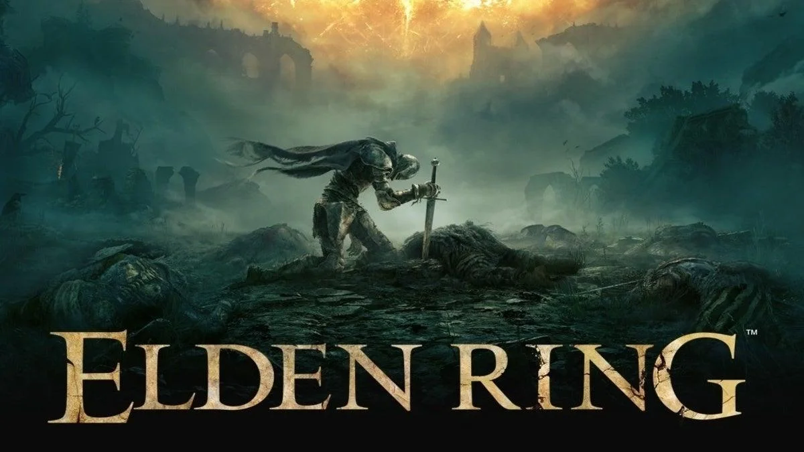
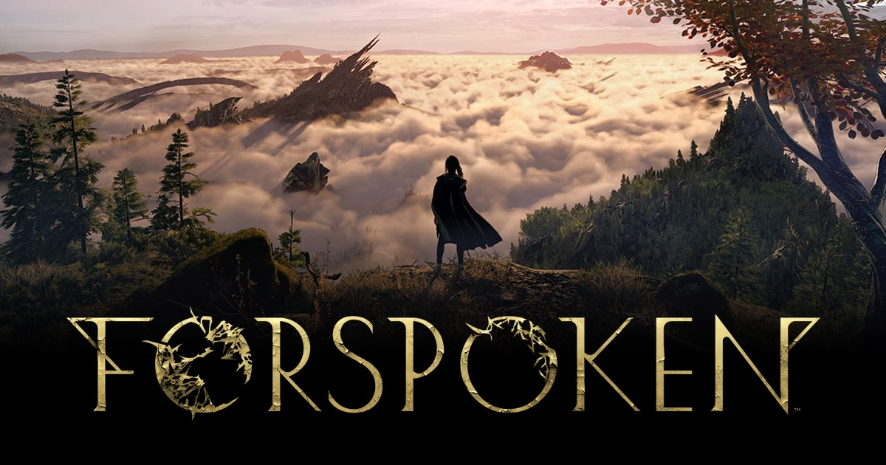

God of War | Playstation

God of War Ragnarök is an upcoming action-adventure hack and slash video game developed by Santa Monica Studio and will be
published by Sony Interactive Entertainment. It is scheduled to be released in 2022 for the PlayStation 4 and PlayStation 5. read more...
Dying Light 2 | PC Xbox Playstation

Dying Light 2: Stay Human is a 2022 action role-playing game developed and published by Techland. The sequel to Dying Light,
the game was released on February 4, 2022 for Microsoft Windows, PlayStation 4, PlayStation 5, Xbox One, and Xbox Series X/S. A Nintendo Switch version for the cloud is currently in development.
read more...
The Day Before | PC Xbox Playstation

The Day Before is an open-world MMO survival set in a deadly, post-pandemic America overrun by flesh-hungry infected
and survivors killing each other for food, weapons, and cars. The Day Before is set to release on June 21 2022.
read more...
Horizon Forbidden West | Playstation

Horizon Forbidden West is a 2022 action role-playing game developed by Guerrilla Games and published by Sony Interactive Entertainment.
A sequel to 2017's Horizon Zero Dawn, the game is set in a post-apocalyptic version of the Western United States, which has been overrun by a deadly plague.
read more...
Elden Ring | PC Xbox Playstation

Elden Ring is an action role-playing game developed by FromSoftware and published by Bandai Namco Entertainment.
The game was directed by Hidetaka Miyazaki and made in collaboration with fantasy novelist George R. R. Martin, who provided material for the game's setting.
Elden Ring is out now on PlayStation, Xbox & Microsoft Windows.
read more...
Forspoken | PC Playstation

Forspoken follows the journey of Frey, a young New Yorker transported to the beautiful and cruel land of Athia.
In search of a way home, Frey must use her newfound magical abilities to traverse sprawling landscapes and battle monstrous creatures.
Forspoken is developed by Square Enix & releases on PlayStation & PC on October 11.
read more...